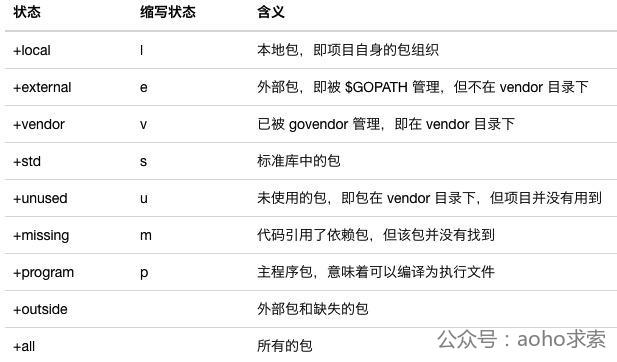

摘自：
http://blueskykong.com/2019/02/18/go-dep-1/
https://www.cnblogs.com/apocelipes/p/10295096.html#vcs-semver
GOROOT的目的就是告知go当前的安装位置,默认go会安装在/usr/local/go下，但也允许自定义安装位置(通过 export GOROOT=$HOME/go1.9.3指定)。编译的时候从GOROOT去找SDK的system libariry
GOPATH必须要设置，GOPATH告知go，需要代码(包括本项目即内部依赖和引用外部项目的代码即外部依赖)的时候去哪里查找。GOPATH可以随着项目的不同而重新设置。
GOPATH下会有3个目录：src、bin、pkg。
内部依赖管理
$GOPATH/src/目录去查找需要的代码GOPATH来管理外部依赖
go允许import不同代码库的代码，例如github.com, k8s.io, golang.org等等；对于需要import的代码，可以使用 go get 命令取下来放到GOPATH对应的目录中去。例如go get github.com/globalsign/mgo（下载和创建项目要保持目录一致，这样才能保证能够正确的引用外部导入和内部导入），会下载到$GOPATH/src/github.com/globalsign/mgo中去，当其他项目在import github.com/globalsign/mgo的时候也就能找到对应的代码了。
$GOPATH/src以后，就可以进去go build了(注意，必须将kube-keepalived-vip项目拷贝到$GOPATH/src目录中，否则go会无视vendor目录，仍然去$GOPATH/src中去找依赖包)。无法精确的引用外部包进行版本控制，不能指定引用某个特定版本的外部包；一旦外部包升级,vendor下的代码不会跟着升级
使用步骤
#安装
go get -u github.com/kardianos/govendor
# 进入项目的根目录
# 创建 vendor 文件夹和 vendor.json 文件，此时文件中只有本项目的信息
govendor init
# 拷贝GOPATH下的代码到vendor目录中，更新vendor.json
govendor add +包名
# 列出已经存在的依赖包
govendor list
# 找出使用的对应包
govendor list -v fmt
# 拉取指定版本的包
govendor fetch golang.org/x/net/context@a4bbce9fcae005b22ae5443f6af064d80a6f5a55
govendor fetch golang.org/x/net/context@v1 # Get latest v1.*.* tag or branch.
govendor fetch golang.org/x/net/context@=v1 # Get the tag or branch named "v1".govendor还可以直接指定依赖包版本来获取包

go module 是go包的集合，是源代码交换和版本化控制的基本单元
go.mod 文件的目录，可以存放于文件系统上的任何位置，而不用管 GOPATH 路径到底是什么要使用go module,首先要设置GO111MODULE=on。
on ，那么无论模块在于何种路径，都会启用模块支持，始终使用 module-aware mode。首先会在$GOPATH/pkg/mod中查找有没有所需要的依赖，没有的直接会进行下载，完全忽略 GOPATH 以及 vendor 目录off，禁用 go module 功能，go compiler 会始终使用 GOPATH mode，即无论要构建的源码目录是否在 GOPATH 路径下，go compiler 都会在传统的 GOPATH 和 vendor 目录 (仅支持在 GOPATH 目录下的 package) 下搜索目标程序依赖的 go package；如果一个包在vendor和$GOPATH下都存在，查找依赖的顺序：$GOPATH下面没有搜索到，那么搜索$GOROOT/src下面的包auto，满足以下任一条件时才使用 module-aware mode:
假设你已经有了一个go 项目， 比如在$GOPATH/github.com/smallnest/rpcx下， 你可以使用go mod init github.com/smallnest/rpcx在这个文件夹下（即模块根目录）创建一个空的go.mod (只有第一行 module github.com/smallnest/rpcx即模块导入名称)。
下面是一个简化的go.mod的内容
module my/thing //模块名称
require (//要求的依赖项列表以及版本
one/thing v1.3.2
other/thing v2.5.0 // indirect
...
)
exclude (//排除的依赖项，仅在当前模块为主模块时生效
bad/thing v0.7.3
)
replace (//替换的依赖项，仅在当前模块为主模块时生效
src/thing 1.0.2 => dst/thing v1.1.0
)go get ./...查找依赖，并记录在go.mod文件中(你还可以指定 -tags,这样可以把tags的依赖都查找到)。
执行上面的命令会把go.mod的latest版本换成实际的最新的版本，并且会生成一个go.sum记录每个依赖库的版本和哈希值，用于验证缓存的依赖项是否满足模块要求
你可以在GOPATH之外创建新的项目。
go mod init packagename可以创建一个空的go.mod,然后你可以在其中增加require github.com/smallnest/rpcx latest依赖，或者像上面一样让go自动发现和维护。
go mod download可以下载所需要的依赖，但是依赖并不是下载到$GOPATH中，而是$GOPATH/pkg/mod中，用来当做缓存，多个项目可以共享缓存的module。
//download 下载依赖的module到本地cache
//edit edit go.mod from tools or scripts (编辑go.mod文件)
例如 go mod edit -require="github.com/chromedp/chromedp@v0.1.0",修改依赖关系使用chromedp 的v0.1.0版本
//tidy 增加丢失的module，去掉未用的module，如在项目的开发过程中, 依赖有变更, 可使用 go mod tidy 来应用这些变更到 go.mod 文件.
//graph print module requirement graph (打印模块依赖图))
//init 在当前文件夹下初始化一个新的module, 创建go.mod文件
//vendor 在项目发布时会要将依赖复制到项目中，会复制modules下载到vendor中, 貌似只会下载你代码中引用的库，而不是go.mod中定义全部的module。
//verify verify dependencies have expected content (校验依赖)
//why explain why packages or modules are needed (解释为什么需要依赖)
//go list -m -json all //依赖详情go module 功能被集成到 go 命令行工具中，例如，在调用诸如 go build，go install，go run，go test 之类的命令时，将启动相应的操作，如缓存，创建或更新 go.mod 和 go.sum 等
go get -u 将会升级到最新的次要版本或者修订版本go get -u=patch 将会升级到最新的修订版本go get package@version 将会升级到指定的版本号versiongolang官方推荐的最佳实践叫做semver，写全了就是Semantic Versioning(语义化版本)。形如vX.Y.Z的形式显然比一串hash更直观，x.y.z, z是修订版本号， y是次要版本号，如此一来包的导入路径发生了变化，不同的导入路径意味着不同的包，更具体的规范在这里。
标记版本号的软件发行后，禁止（MUST NOT）改变该版本软件的内容。任何修改都必须（MUST）以新版本发行。
标准的版本号必须（MUST）采用 X.Y.Z 的格式，其中 X、Y 和 Z 为非负的整数，且禁止（MUST NOT）在数字前方补零。X 是主版本号、Y 是次版本号、而 Z 为修订号。每个元素必须（MUST）以数值来递增。例如：1.9.1 -> 1.10.0 -> 1.11.0。